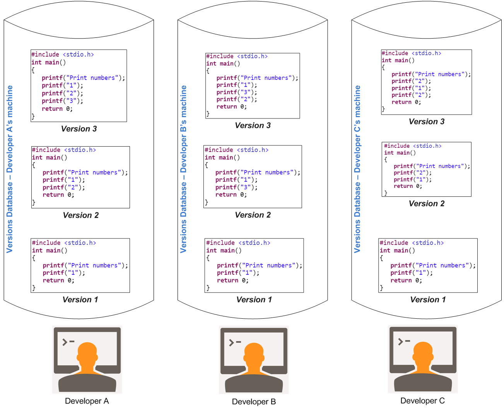
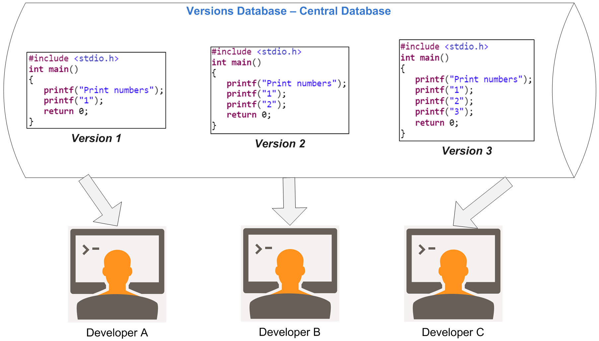
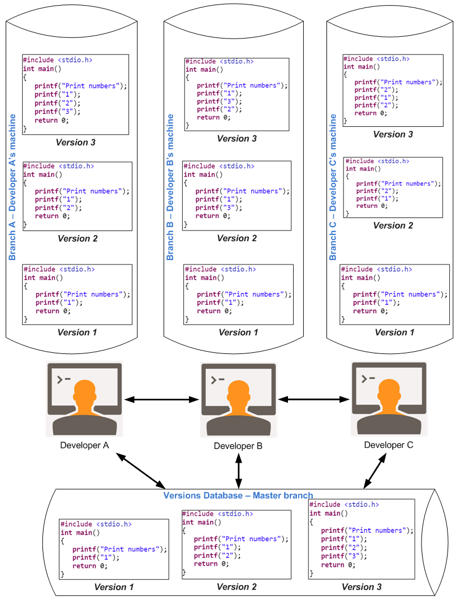

Problem Statement
If you are a developer and want to keep every version of a file (which you would most certainly want to), a Version Control System (VCS) is required. What are the choices you have?
What is Version Control
Version control is a system that records changes to a file or set of files over time so that you can recall specific versions later.
This so called "Version Control System (VCS)" needs to be a software or a manual one, let's evaluate.
Solution 1 - Maintain changes locally
- I can maintain all the version of a single file myself, like saving files with numbers (some ordering) or timestamp at the end.
- Saving each file into a separate directory (Create directory with timestamp)
This solution (not scalable, error prone, pretty risky for loosing changes may be called "Manual Local Version Control System", though no official name for this approach.
Problem(s) with this Solution - "Many"
This approach is very common because it is so simple but poses these risks.
- Easy to forget which directory you’re in and accidentally write to the wrong file or copy over files you don’t mean to.
- May work for small number of files but even with small no. of files, this is error prone.
- If any other developer needs a particular version, then you can share over email or shared drive or some other better way.
- Not scalable
- Changes can be lost easily
- Whenever you have the entire history of the project in a single place, you risk losing everything.
Solution 2 - Maintain changes locally with some system like database
To get of rid of above issues, programmers long ago developed local Version Control Systems that had a simple database keeping all the changes to files under revision control.
In below example, there are 3 developers - A, B & C.
Each one of them is working on a C Hello World program, which prints numbers. Observe carefully their programs. With locally managed database, each one of them is not aware about the changes being made by other developer.
Problem with this Solution - No collaboration
Clear evident from below setup that having Version Control Systems (database or any other system) on individual developer's machine lacks collaboration among developers.
Manage changes locally
Solution 3 - Manage changes centrally
To deal with collaboration problem, Centralized Version Control Systems (CVCSs) were developed. These systems, such as CVS, Subversion, and Perforce.
Manage changes centrally
Centralized system works because of it's simplicity, backup, undo and synchronization.
This setup offers many advantages, especially over local VCSs. For example, everyone knows to a certain level what everyone is doing. Administrators have fine-grained control over who can do what; and it’s far easier to administer a Central VCS than to local databases on every client.
CVCSs Workflow
- Pull down/Update your local copy with any changes other people have made from the central server.
- Make your changes, and make sure they work properly.
- Commit your changes to the central server, so other programmers can see them.
Problems with CVCS
CVCS isn’t great for merging and branching changes people make. As projects grow, you want to split features into chunks, developing and testing in isolation and slowly merging changes into the main line. In reality, branching is cumbersome, so new features may come as a giant checkin, making changes difficult to manage and untangle if they go awry.
Merging is definitely “possible” in a CVCS, but it’s not easy: you often need to track the merge yourself to avoid making the same change twice. Distributed systems make branching and merging painless because they rely on it.
If centralized server goes down for an hour, then during that time nobody can collaborate at all or save versioned changes to anything they’re working on.Distributed Version Control (DVCSs)
Manage changes in Distributed fashion
This is where Distributed Version Control Systems (DVCSs) step in. In a DVCS (such as Git, Mercurial, Bazaar or Darcs).
Clients don’t just check out the latest snapshot of the files: they fully mirror the repository. Thus if any server dies, and these systems were collaborating via it, any of the client repositories can be copied back up to the server to restore it. Every clone is really a full backup of all the data
Advantages of DVCSs over CVCSs
- Everyone has a local sandbox. You can make changes and roll back, all on your local machine. No more giant checkins; your incremental history is in your repo.
- It works offline. You only need to be online to share changes. Otherwise, you can happily stay on your local machine, checking in and undoing, no matter if the “server” is down or you’re on an airplane.
- It’s fast. Diffs, commits and reverts are all done locally. There’s no shaky network or server to ask for old revisions from a year ago.
- It handles changes well. Distributed version control systems were built around sharing changes. Every change has a guid which makes it easy to track.
- Branching and merging is easy. Because every developer “has their own branch”, every shared change is like reverse integration. But the guids make it easy to automatically combine changes and avoid duplicates.
- Less management. Distributed VCSes are easy to get running; there’s no “always-running” server software to install. Also, DVCSes may not require you to “add” new users; you just pick what URLs to pull from. This can avoid political headaches in large projects.